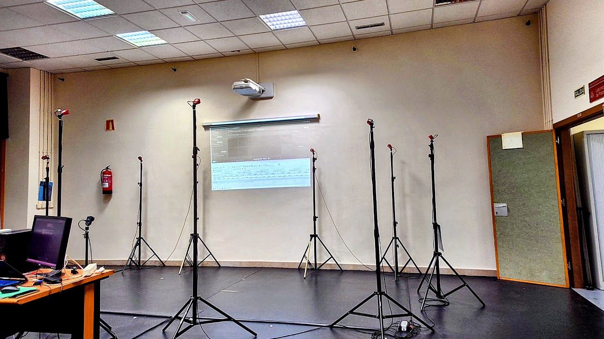

MovLab, the motion capture laboratory
A passive-marker optical system and a wireless inertial system that work independently or synchronised over the same capture volume. It is the reference against which we check what the wearable sensors say.

Hybrid optical and inertial capture
The optical system uses nine OptiTrack Flex 3 cameras around the capture volume. The inertial system records wirelessly on the same time base, so every wearable estimate can be compared sample by sample with the optical reference.
The laboratory has itself been evaluated: we measured the performance of the optical system with an industrial robot, following a procedure inspired by ASTM E3064.
- Published in
- IEEE MFI 2020; Sensors 2021
Robotic test bench
A six-axis manipulator moves the sensors along trajectories whose orientation is known from the robot's encoders. It gives a reference free of soft tissue, repeatable and available under static and dynamic conditions.
- Robot
- Universal Robots UR3e, six axes
- Reference for
- Inertial orientation estimation and optical motion capture
- Published in
- IEEE Trans. Instrumentation and Measurement 2026; IEEE I2MTC 2025
Wearable inertial nodes
The group designs its own wearable inertial measurement units and characterises them metrologically: noise, bias stability, scale factor and axis misalignment. A second design extends the bandwidth to capture rapid events such as impacts.
- Published in
- Sensors 2024; Sensors 2025; IEEE I2MTC 2025
Open software
SimurToolsTB is the group's MATLAB toolbox for IMU-based human motion analysis, released under the MIT licence on GitHub.
To visit the laboratory or ask about validation work for partners, write to juan@uniovi.es. We are at Ed. Departamental Oeste nº 2, Lab 2.1.15, Campus Universitario, Gijón.